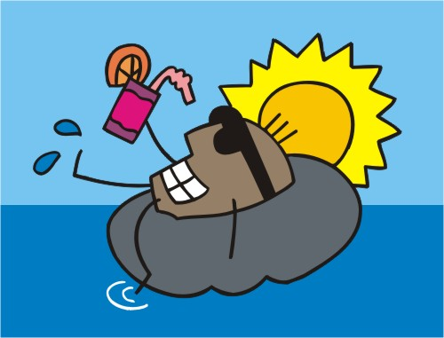
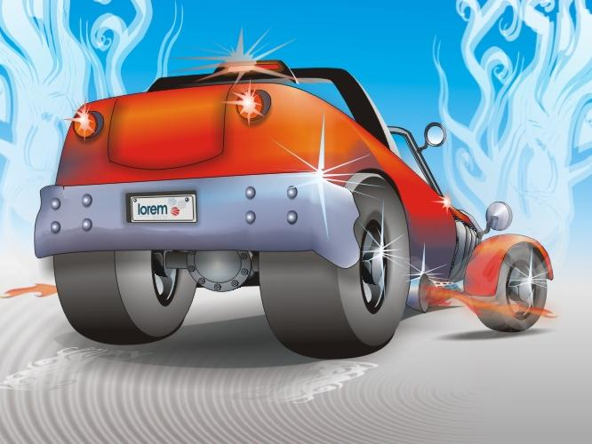

Paveiksleliai:


Kvie�iame � Tarybos pos�d�, kuris �vyks �. m. spalio 19 d. (tre�iadien�) 11.00 val. MII direkcijoje, Akademijos g. 4. Darbotvark�: 1. Doktorant� atestacijos rezultat� tvirtinimas (A. �aplinskas, K. Kubilius, A. �ilinskas). 2. D�l J. Andrikonio ir S. Roman disertacij� gynimo (K. Kubilius). 3. Naujos VU MII mokslin�s temos �eMentor� tvirtinimas (S. Maskeli�nas). 4. Kiti klausimai. Tarybos pirmininkas K�stutis Kubilius